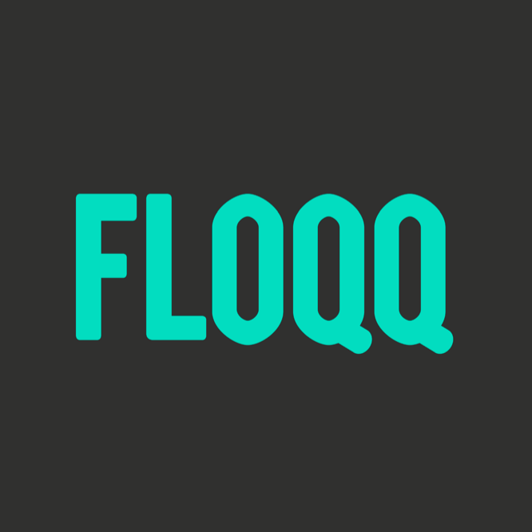
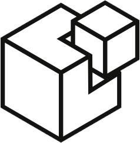

Buenos días
- Uno
- Dos
- Tres
- Cuatro
Automate your env
with Vagrant and Chef
var speaker = {
name: 'Javi Velasco',
twitter: '@javivelasco',
worksAt: 'imixme.com',
github: 'javivelasco',
blog: 'blog.javivelas.co'
}
Who's the geek?
“@javivelasco, an aspiring web craftsman.”
Former front-end developer turned to fullstack. I pleasently worked with Floqq, Mindster and now @ Imixme
- 
Problems to solve
- Multiple environments that should be set up the same
- Developers in a team with different machines or OS.
- Run projects with conflictive dependencies.
- Wanna play with new stuff without f***ing up your env.
“Is easy to run the stack @ local? -New developer”
“Hey, this is not working for me!” -Any developer
Development environments made easy.
What is Vagrant?
A software that provides a portable and reproducible environment using virtual machines. Automation tools are used for provisioning. All is set up in your project repository
$ vagrant init imixme/precise32
$ vagrant up
$ vagrant ssh
Terminology
- Boxes: a bundle containing your OS image and metadata.
- Host & Guest: host is the one who starts vagrant, guess the other one.
- Providers: handles the virtualization process.
- Provisioners: automates the setup by installing software and configuration.
- Vagrant file: hold the definition of the machine (Ruby)
- Shared folder: allows to edit your files in host while running in guest.
VagrantFile
VAGRANTFILE_API_VERSION = "2"
Vagrant.configure(VAGRANTFILE_API_VERSION) do |config|
config.vm.box = "http://domain.com/path/to/above.box"
config.vm.network "forwarded_port", guest: 80, host: 8080
config.vm.network "private_network", ip: "33.33.33.10"
config.ssh.forward_agent = true
config.vm.synced_folder "apps", "/apps"
end
But here there is no configuration for software right?... Yep, but we can use shell scripts to run on vagrant up
Shell script provision
You can always use scripts to provision your vagrant machine but if you have a complex stack or configuration... it's kind of messy.
# provision inline
config.vm.provision "shell", inline: "ls -la /vagrant"
# provision by script
config.vm.provision "shell", path: "script.sh"
Solution: use an IT automation tool
Provisioners
Without provisioners Vagrant wouldn't be the same. Constructing boxes and distribute them is as heavy as classic VM images. Vagrant supports, along with Shell scripts:
-
 Ansible
Ansible
- Puppet
-  Salt
- Chef
Demo time
Let's give a try to Vagrant command line and explore some options
IT automation for speed and awesomeness
What is Chef
Chef is a Ruby framework for automating, reusing and documenting server configuration. Two versions:
Chef Server & Client
Chef Solo
What Chef gives you
- Idempotence (state behavior)
- Standar directory structure for organization
- Sequential execution order
- Templates for config files
- Open source & big community
- Ruby as scripting language
- Configuration that is readable, accesible and repetible
“Chef is like unit testing for your servers” - Ezra Zygmuntowicz (CTO at Intridea)
Terminology
- Node is where Chef runs.
- Recipe is file of Ruby containing commands to run on a node.
- A resource includes files, directory, users and services.
- Cookbook is a collection of recipes.
- Role refers to reusable configuration for multiple nodes
- Run list array of recipes and roles that define what should be executed on a node.
- Attributes are variables used in recipes and templates.
- Templates are .erb files with placeholders for attributes used to create configuration.
- A notification can trigger an update in resource when another resource is changed.
Let's see an example
How can we install and run nginx
Cookbook structure
Chef defines some diretories to structure your cookbooks.
├── main
│ └── recipes
│ └── default.rb
└── nginx
├── attributes
│ └── nginx.rb
├── recipes
│ └── default.rb
└── templates
└── default
└── nginx.conf.erb
A simple recipe
The code below installs nginx with the package built-in in the system, defines nginx as a service and sets a template to configure it.
# nginx/recipes/default.rb
package "nginx"
service "nginx" do
supports :status => true, :restart => true, :reload => true
action [:enable, :start]
end
template "/etc/nginx/nginx.conf" do
source "nginx.conf.erb"
notifies :reload, "service[nginx]"
end
Note that...
- package directive uses the default builtin packaging system. You can specify others i.e. RubyGems
- service declares nginx as a service that can be manipulated from /etc/init.d/
- template directive looks in default folder refering to a node, not a recipe. You can specify others.
- attribute system in Chef is REALLY complex with about 15 layers of precedence.
Add a main recipe
It's not mandatory but always recommended. Useful for specific setup, for example, defining your specific recipe dependencies and update your package manager.
# update your package manager
execute "apt-get update" do
command "apt-get update"
end
# dependencies for the proyect
include_recipe "nginx"
Running..
$ gem install chef
$ echo cookbooks_path "/cookbooks" > /etc/chef/solo.rb
$ echo {"run-list": ["recipe[nginx]"]} > /etc/chef/node.json
$ chef-solo -j /etc/chef/node.json
... and in the VagrantFile ...
# VagrantFile
config.vm.provision :chef_solo do |chef|
chef.add_recipe "default"
end
Demo time
and other complex examples?
So... what do we get?
- Fully working and documented environment.
- Ability to replicate our environments easily.
- An easy IT troubleshooting.
- ... so you can experiment and destroy everything.
- No worries about IT issues, not anymore.
Alternatives?
Yep, you can get similar results with other tools, for example:
- Vagrant is the master, but I also found Vortex.
- We've already saw alternatives to Chef.
- And the one who sounds better and maybe it's a Chef killer...
What's Docker?
Docker is an open-source project to easily create lightweight, portable, self-sufficient containers from any application. The same container that a developer builds and tests on a laptop can run at scale, in production, on VMs, bare metal, OpenStack clusters, public clouds and more.
- In the end you have similar results.
- Really lightweight
- Scalable
Some resources
- Official sites for Vagrant and Chef
- Peepcode screencast series by Joshua Sierles
- Railscasts episode about Chef Solo by Ryan Bates
- Vagrant cookbook @leanpub by Erika Heidi
- Collection of cookbooks for Chef by Joshua Sierles
Thanks!
Any questions?